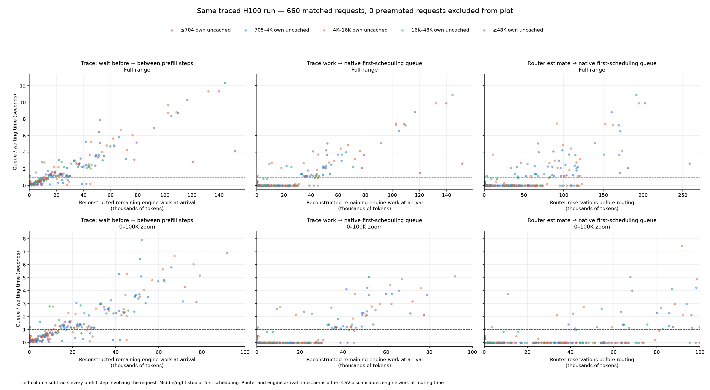
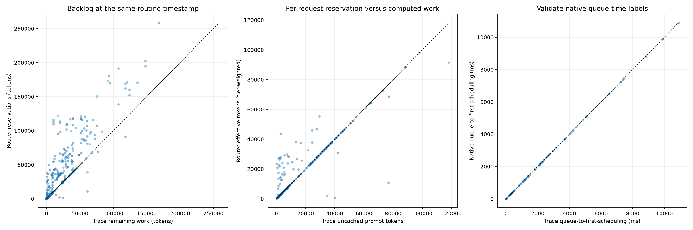
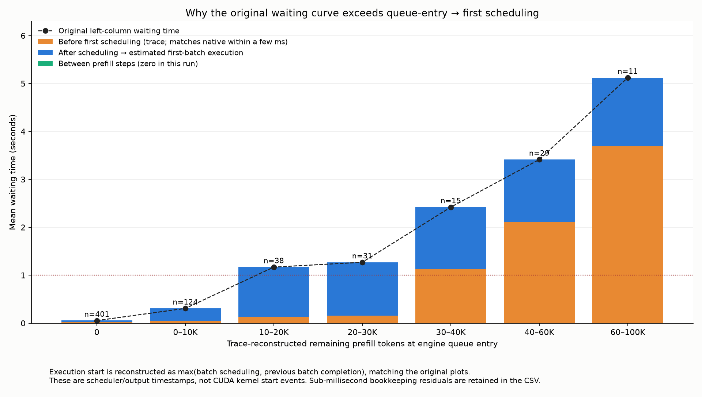

{
"dropped_trace_events": 0,
"incomplete_trace_requests": 0,
"native_samples": 661,
"traced_completed_requests": 660,
"matched_requests": 660,
"preempted_requests_excluded_from_plot": 0,
"native_vs_trace_initial_queue_abs_error_ms": {
"median": 1.2451328802853823,
"p95": 2.933492802549153,
"maximum": 16.73193695023656
},
"engine_arrival_replay_vs_original_max_token_difference": 0.0,
"note": "Ground-truth replay is retrospective and uses completed chunks. Missing trace requests or dropped events limit completeness. Effective router reservations may include cache-tier weights."
}Paired points CSV

Async CPU scheduling can precede batch execution. This run has no intervening skipped batches between request prefill steps. Execution starts below use the same previous-completion inference as the original reconstruction, not CUDA start events.
Load-bin statistics CSV · Accounting summary
